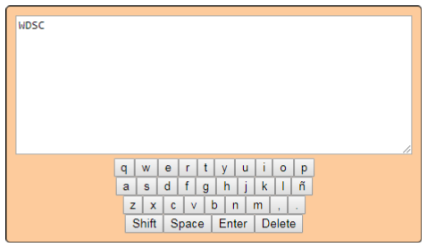

Ejercicios de Repaso
- Ejercicio 1 -> Crear un input tipo texto y un botón. Al apretar en el botón mostrar la información del input en un div y en un alert.
- Ejercicio 2 -> Validar un campo texto. Si está vacío, poner color rojo en el input, en caso contrario verde.
- Ejercicio 3 -> Validar un campo numérico. Si es menor de 18, mostrar un texto que confirme que es menor, en caso contrario, que es mayor.
- Ejercicio 4 -> Mostrar una parte del texto y un enlace (etiqueta a) que diga “Leer más”. Cuando se presione en él, mostrar todo el texto y ocultar “Leer más”.
- Ejercicio 5 -> Input para pedir cantidad de números de teléfono a introducir. Crear tantos inputs como teléfonos como ha requerido el usuario y mediante un botón imprimirlos.
- Ejercicio 6 -> Crear un pequeño formulario con nombre, teléfono y dirección. Al rellenar el formulario y mediante un botón, introducir los datos en una lista.
Prácticas Repaso
- Activitat 1->
Se pregunta a l'usuari quantes calculadores vol crear mitjançant un camp tipus "input" numèric.
Una vegada introduït s'han de crear aquesta quantitat de calculadores mitjançant un botó dins d'un div amb “id” amb valor “–”. Un exemple de l'estructura de 3 calculadores:

Cada calculadora permet dur a terme l'operació de suma, resta, divisió i multiplicació de manera independent.
Material d'anàlisi:
setAttribute() - ACTIVITAT 2 ->
S'ha de crear un teclat virtual que permeti escriure mitjançant diferents inputs que simulen cadascuna de les lletres de l'abecedari:

Intro que efectua un salt de línia.
Shift que una vegada polsada commuta entre minúscules i majúscules.
Space que escriu un espai.
Delete que esborra l'últim caràcter.
La zona on es veurà reflectit el text és un textarea i tot el contingut ha de crear-se des de JS, tenint en l'HTML un únic div.
Material d'anàlisi:
toUpperCase()
substr()